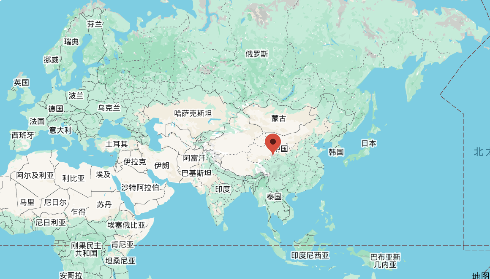
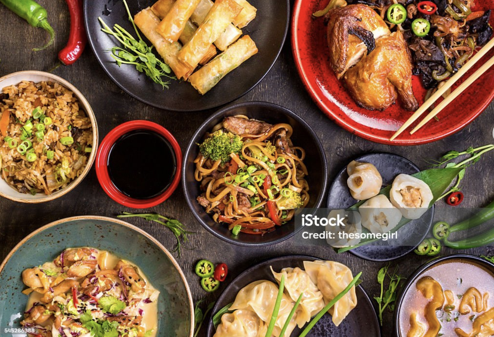
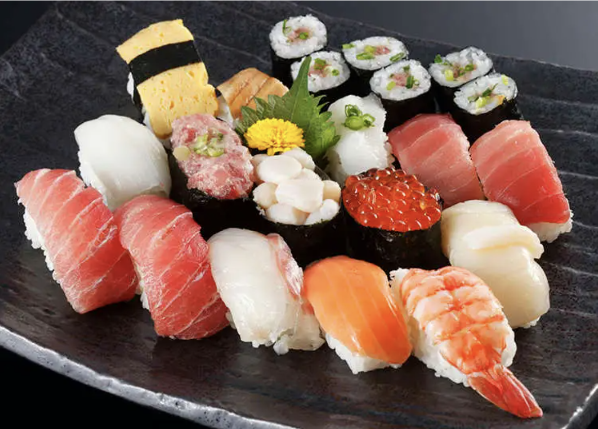
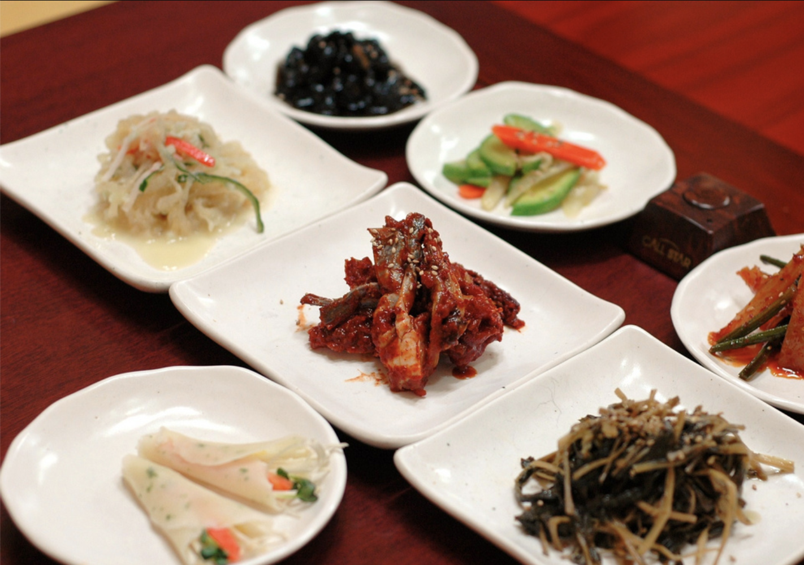

Asian food is rich in variety and reflects the history, geography, religion, and lifestyles of different countries. Each country has its own special ingredients, cooking methods, and food traditions.


Popular foods include dumplings, Peking duck, hot pot, and fried rice.
Family meals are an important part of Chinese food culture. Flavours vary by region. Sichuan food is often spicy, while Cantonese food is usually lighter.

Popular foods include sushi, ramen, and tempura.
Japanese cooking often emphasizes fresh, seasonal ingredients and careful presentation. Rice, seafood, and miso are common ingredients.

Popular foods include kimchi, Korean BBQ, and bibimbap.
Sharing side dishes is common at Korean meals. Cooks often use chili peppers, garlic, sesame oil, and fermented ingredients.
East Asia: Rice, noodles, and seafood are common.
Southeast Asia: Tropical fruits, coconut milk, spices, and seafood are popular.
South Asia: Rice, beans, and spices are widely used.
Hinduism: Many Hindus avoid beef.
Islam: Muslims who follow halal dietary rules avoid pork.
Buddhism: Some Buddhists choose vegetarian food.
China: Family reunion dinners are important during Chinese New Year.
Korea: Families often share several side dishes at meals.
Japan: Traditional meals often emphasize table manners and respect.